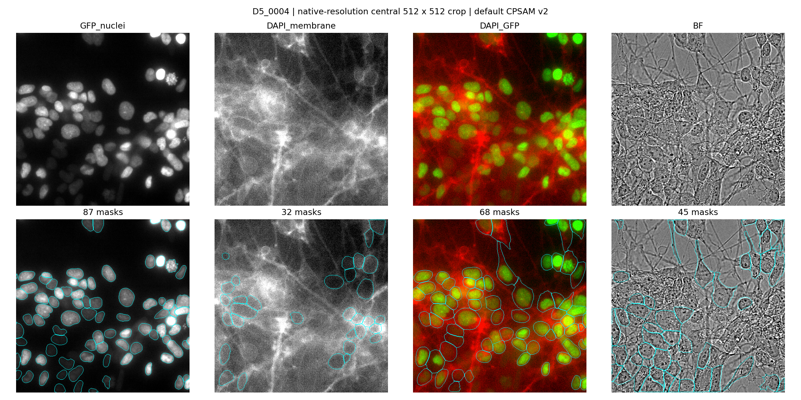
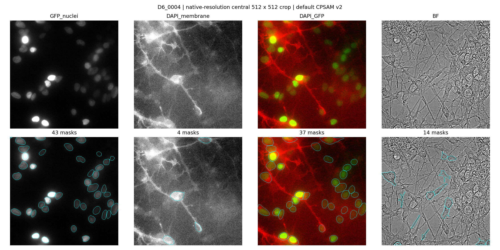
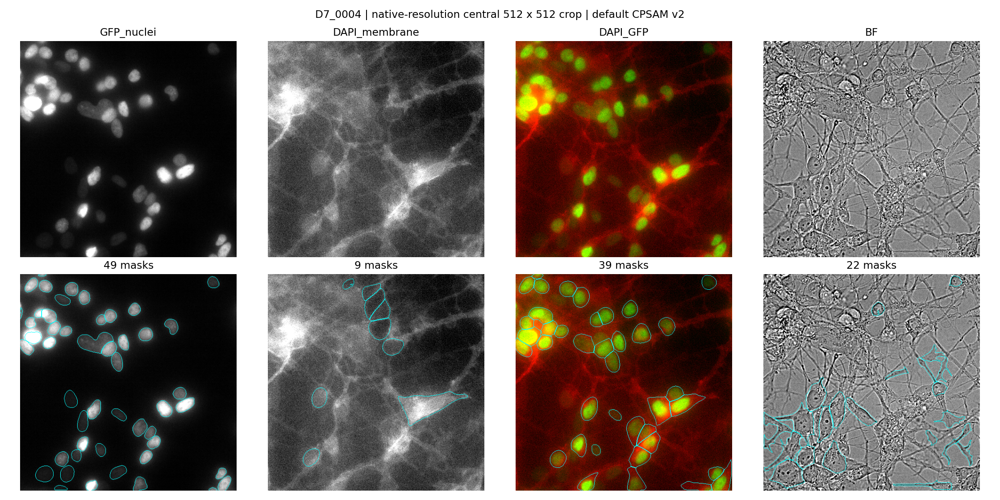
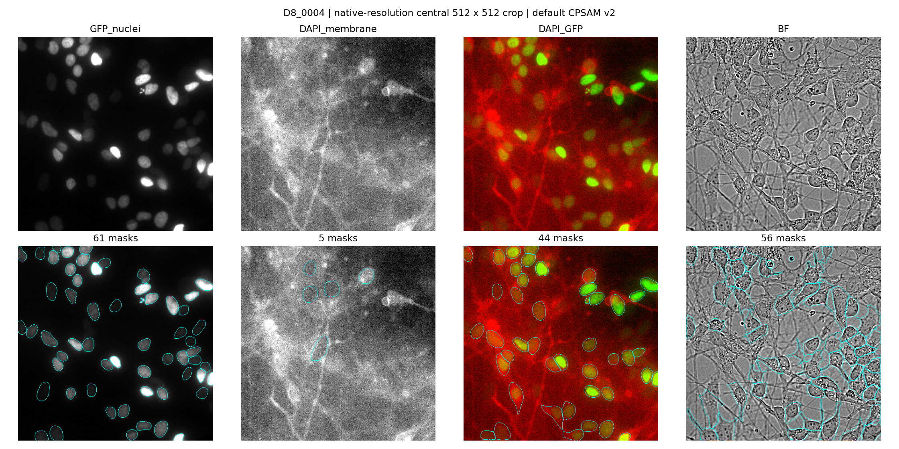
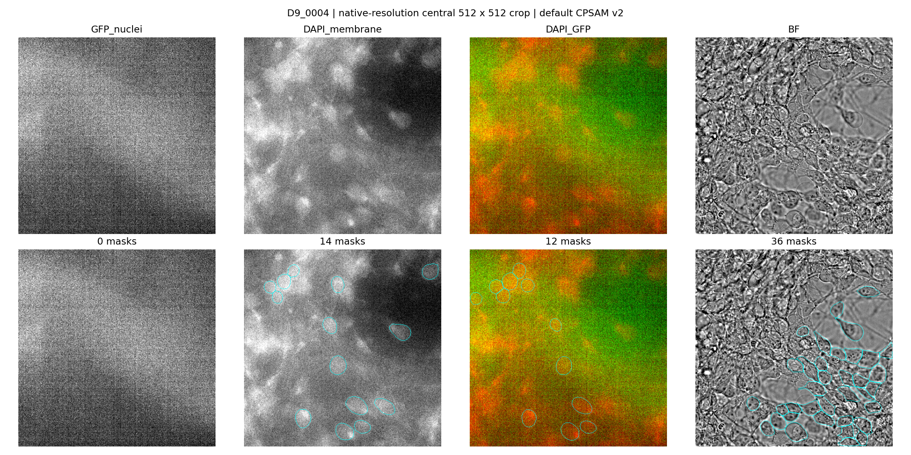

Dataset: 20261018_FP_autofocus_test_002. Evaluation date: October 23, 2026.
This is a visual feasibility evaluation, not an accuracy benchmark. There are no manually annotated reference masks. Object counts alone do not establish segmentation quality, and nuclei and cell-body masks are different targets.
GFP-only is the strongest starting point for nuclear segmentation in D5–D8. Many bright and dim nuclei receive plausible outlines. Crowded regions, faint detections, and touching nuclei still require review; some boundaries split or merge objects ambiguously. This is not a validated cell count.
Reliable whole-neuron segmentation is not demonstrated by this baseline. DAPI-only detects a limited subset of objects and does not reconstruct the extensive processes. BF produces sparse, irregular regions. DAPI + GFP is largely driven by nuclear locations, sometimes extending into membrane signal, but does not consistently recover complete cell bodies or assign crossing neurites to individual cells.
For a practical next step, use GFP masks as candidate nuclear locations, manually annotate held-out examples to quantify errors, and evaluate soma boundaries separately from neurites. Resolve the weak D9 GFP signal before interpreting nuclear counts there.
Cellpose 4.2.1.1, pretrained cpsam_v2, CPU, default inference settings. No model training, threshold optimization, diameter adjustment, or image resizing. Standard Cellpose normalization remains enabled. Inputs compared: GFP nuclei, DAPI membrane, DAPI + GFP, and BF. Channel names follow the acquisition sequence and stain identities follow the user's description.
Each well contributes its central field (_0004), selected by position rather than segmentation success. Each field contributes the native-resolution central 512 × 512 crop (y=256:768, x=256:768). This covers five of 45 fields and one quarter of each sampled field. Crop-edge objects are included. All 45 full fields were inspected numerically for GFP intensity range. Full-field segmentation and the three-channel combination were not tested.
| Field | GFP nuclei | DAPI membrane | DAPI + GFP | BF |
|---|---|---|---|---|
| D5_0004 | 87 | 32 | 68 | 45 |
| D6_0004 | 43 | 4 | 37 | 14 |
| D7_0004 | 49 | 9 | 39 | 22 |
| D8_0004 | 61 | 5 | 44 | 56 |
| D9_0004 | 0 | 14 | 12 | 36 |
All nine D9 GFP fields have a 1st–99th percentile intensity span of only 55–57 raw units, versus 635–1419 in D5–D8. The displayed D9 field lacks clear nuclear detail. Treat this as an acquisition/staining/channel-quality question; the data alone do not identify the cause. Independent contrast scaling makes weak background visible and can exaggerate apparent signal.
Top row: input image. Bottom row: the same image with cyan mask boundaries. In the fluorescence composite, membrane is red and nuclei are green. Display scaling uses each channel's 1st–99th percentiles and does not alter the saved raw data.





Counts and mask measurements (CSV) · Run metadata · All-field GFP checks · Full-field channel overview · Inference script
Integer label TIFFs are named pNNN_MODE_masks.tif; label 0 is background. They correspond to the cropped coordinates, not the full image. Each mask is 512 × 512. The source dataset was read only. Model weights are cached locally as cpsam_v2 and excluded from Git by the analysis folder's .gitignore.
Run the analysis script with C:\Users\spraman\anaconda3\envs\confocal_control_gui_cellpose4\python.exe. Existing masks are reused; use a new output folder for a fresh inference run. Use the workspace launch_cellpose4_napari.bat for GUI inspection, cropping source layers to the documented coordinates before overlaying these masks.